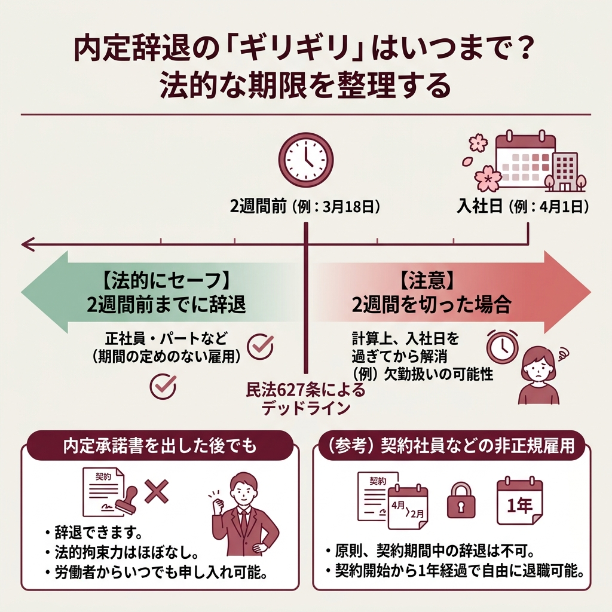
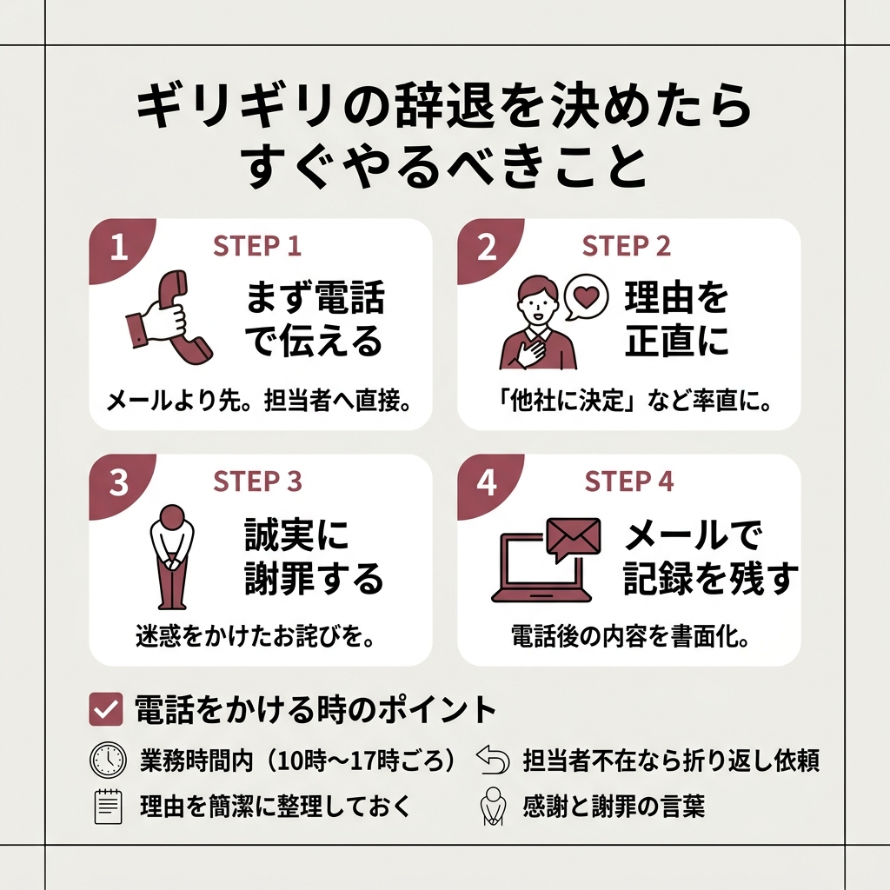
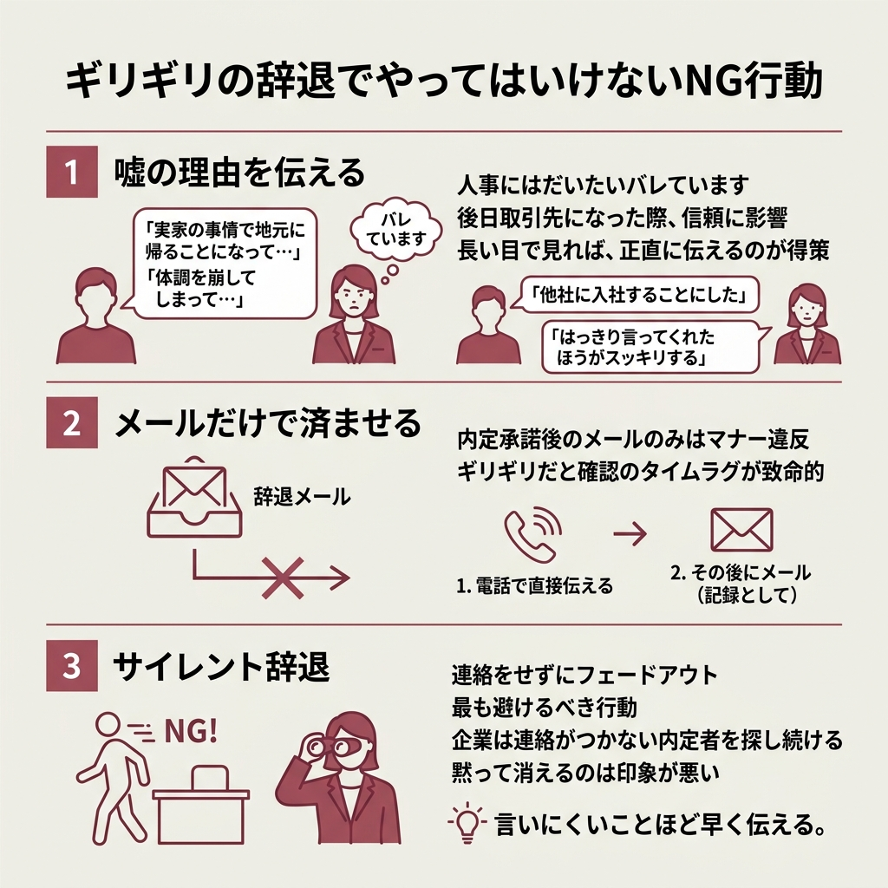

入社日が迫っているのに、内定辞退したい気持ちが消えない。
「もう手遅れかも…」と焦っている人もいるんじゃないでしょうか。
結論から言うと、内定辞退はギリギリでも法的に可能です。
ただしタイミングが遅くなるほど、企業側のダメージは大きくなります。
この記事では内定辞退のギリギリラインとリスク、円満に辞退するための伝え方をまとめました。
新卒で内定式後に迷っている人も、転職で入社日が迫っている人も、参考になる内容になっていると思います。

まず押さえておきたいのが民法627条の存在です。
当事者が雇用の期間を定めなかったときは、各当事者は、いつでも解約の申入れをすることができる。この場合において、雇用は、解約の申入れの日から二週間を経過することによって終了する。
民法第627条第1項
正社員（期間の定めのない雇用）であれば、入社日の2週間前までに辞退を伝えれば法的には問題ありません。
4月1日入社なら、3月18日がデッドラインですね。
アルバイトやパートでも同じく2週間前が基準になっています。
ちなみに、期間の定めがある非正規雇用（契約社員など）の場合は話が別で、原則として契約期間中の辞退はできません。
ただし契約開始から1年が経過していれば、労働者側から自由に退職できるとされています。
辞退の期限についてもっと詳しく知りたい方は、こちらの記事も参考にしてみてください。
承諾書にサインしちゃったんだけど、もう辞退できないの？
大丈夫、辞退できます。承諾書に法的な拘束力はほぼありません。
「承諾書を出した＝もう後戻りできない」と思い込んでいる人は多いんですよね。
内定承諾書を提出すると労働契約は成立しますが、労働者側からいつでも解約の申し入れが可能です。
承諾書は「入社の意思がある」という確認書類であって、辞退を禁止する契約書ではありません。
ここが「ギリギリ」の本質ですね。
入社日まで2週間を切ってから辞退を申し出ると、計算上は入社日を過ぎてから雇用契約が解消される形になります。
たとえば4月1日入社で3月25日に辞退を伝えた場合、契約解消日は4月8日。
4月1日〜8日の間は理論上「欠勤扱い」になりえるんですよね。
ただ、これが実際に損害賠償につながるケースはほぼないというのが実情です。
企業が内定者個人に対して訴訟を起こすコストを考えると、割に合わないんですよね。
とはいえ「法的にセーフだから何も気にしなくていい」というわけではありません。
タイミングが遅れるほど企業に与える迷惑は大きくなるので、決断したらすぐ動くのが鉄則です。
2週間を切っていても、「本人の責任ではない理由」なら損害賠償を請求される可能性はまずありません。
こういった事情なら、企業側も「それは仕方ないですね」と受け止めてくれるのが一般的です。
仮に訴訟を起こされたとしても、本人にどうしようもない事情であれば損害賠償が認められる可能性はほぼないと考えてよいでしょう。
体調や留年のケースでは、入社日を後ろ倒しにしてくれる企業もあるみたいですね。
まずは正直に事情を伝えて、相談してみることをおすすめします。
ギリギリのタイミングで第一志望から内定が出た、という話は実はかなり多いです。
特に中途採用だと、内定から入社日までが2週間を切っているケースも珍しくありません。
この場合でも、誠意を持って伝えれば大きなトラブルにはなりにくいとされています。
大事なのは「辞退すると決めた瞬間に、すぐ連絡する」こと。
1日でも早いほうが、企業側のダメージは確実に小さくなりますよ。
早めに連絡すれば、企業としても「他の候補者に声をかけ直す」「中途の追加募集をかける」といった対応が取れます。
逆にギリギリまで黙っていると、そうした選択肢がどんどん狭まってしまうんですよね。
法的に可能だとしても、リスクがゼロになるわけではありません。
企業が個人に対して裁判を起こすケースはほとんどありませんが、可能性がゼロとは言い切れないのも事実です。
社員1人を雇うために、企業は求人掲載費・面接の人件費・入社準備・備品調達など多くのコストをかけています。
ギリギリで辞退されると「迷って落とした別の候補者をもう採用できない」状況にもなりかねません。
中途採用の場合は、辞退者のポジションに合わせてプロジェクト計画を組んでいることもあるので、影響がさらに大きくなるケースもありますよ。
法的にOKなら問題ないよね？
法的にはそうですね。でも同じ業界で取引先として再会する可能性も考えておいたほうがいいですよ。
ギリギリで辞退された企業側の気持ちは、正直かなり厳しいものがあります。
同じ業界で働くなら、どこかで再会する可能性はゼロではないんですよね。
個人的には、だからこそ「辞退する」と決めたら誠意ある対応をするのが最低限のラインだと思っています。
「電話したくない」「怒られるのが怖い」「申し訳なさすぎて連絡できない」。
ギリギリになるほど、この心理的ハードルはどんどん上がっていきます。
結果として連絡を先延ばしにして、さらにギリギリになるという悪循環に陥りがちなんですよね。
つらいのは一瞬ですが、連絡しないまま時間が過ぎるストレスのほうがよっぽど長く続きます。
いろいろ調べてみても「すぐ連絡しましょう」という結論はどこを見ても同じなんですよね。
腹をくくって電話する5分間を乗り越えれば、あとは確実に楽になりますよ。
ギリギリの辞退がどんなトラブルに発展しうるか、こちらの記事でも詳しくまとめています。

時間がないからこそ、行動は明確にしておきたいですよね。
業務時間内に人事担当者へ電話しましょう。メールより先に電話が鉄則です。
嘘の理由はバレやすいです。「他社にご縁をいただいた」と率直に伝えましょう。
迷惑をかけている事実は変わりません。誠実に謝りましょう。
電話後に「先ほどお伝えした件」としてメールを送り、書面の記録を残しておきます。
電話って気が重いですよね。
でもギリギリであればあるほど、電話のほうが誠意は伝わります。
メールだと読まれるまでにタイムラグが出るので、一刻を争う場面ではまず電話してください。
「お世話になっております、〇〇と申します。人事部の△△様はいらっしゃいますでしょうか」
（担当者につながったら）
「お忙しいところ恐れ入ります。大変申し上げにくいのですが、先日お受けした御社の内定を辞退させていただきたく、ご連絡いたしました」
「他社からもご縁をいただき、悩んだ末にそちらでお世話になることを決めました。内定承諾後のご連絡となり、誠に申し訳ございません」
「選考にお時間をいただいたにもかかわらず、このような結果になってしまい深くお詫び申し上げます」
辞退の理由を聞かれた場合でも、長々と説明する必要はありません。
ポイントは「理由を正直に、でも簡潔に」伝えることです。
相手から「どちらの企業ですか？」と聞かれても、企業名を答える義務はありません。
「申し訳ありませんが、お伝えすることは控えさせていただきます」で大丈夫ですよ。
引き止められた場合でも、辞退の意思が固まっているなら「大変ありがたいお話ですが、決断を変えるつもりはございません」ときっぱり伝えましょう。
中途半端な返事をすると「まだ迷っている」と受け取られて、話が長引く原因になります。
件名：内定辞退のご連絡（氏名）
株式会社〇〇 人事部 △△様
お世話になっております。先日内定をいただきました〇〇です。
大変恐縮ではございますが、検討の結果、内定を辞退させていただきたくご連絡いたしました。
貴重なお時間をいただいたにもかかわらず、このような結果となりましたこと、深くお詫び申し上げます。
末筆ながら、貴社の益々のご発展をお祈り申し上げます。
メールはあくまで電話の補足として使ってください。
電話で伝えた後に「先ほどお電話でお伝えした件をメールでもご連絡いたします」と送ると丁寧ですね。
メールには辞退の意思・簡単な理由・感謝の言葉を入れておけば十分です。
あまり長文にすると逆に言い訳がましく見えるので、簡潔にまとめるのがコツですよ。

「実家の事情で地元に帰ることになって…」「体調を崩してしまって…」
気持ちはわかるんですが、これ、だいたいバレています。
毎年何十人もの内定辞退を受けている人事担当者は、このパターンを何度も聞いているんですよね。
しかも嘘がバレると、後日その企業が取引先になったとき信頼関係に響く可能性があります。
短期的には嘘のほうが楽に見えても、長い目で見ると正直に話したほうが得策です。
「他社に入社することにした」とストレートに伝えるのは気まずいですが、人事担当者からすると「はっきり言ってくれたほうがスッキリする」というのが本音みたいですよ。
「電話は気まずいから、メールで伝えよう」と思うかもしれません。
でも内定承諾後の辞退をメールだけで済ませるのはマナー違反と受け取られやすいです。
メールはいつ読まれるかわからないですし、ギリギリのタイミングだとタイムラグが致命的になることもあります。
まず電話で直接伝えて、その後にメールで「記録として」送る。
この順番は必ず守ってください。
辞退の連絡が怖くて先延ばしにしてしまう、その気持ちはわかります。
でも黙って消えるのは、ギリギリの辞退よりもはるかに印象が悪いんですよ。
言いにくいことほど早く伝える。これが鉄則です。
「辞退の連絡が怖い」という気持ちとどう向き合うかについては、こちらの記事でも触れています。
ここまで読んで、まだ「本当に辞退していいのか」と揺れている人もいると思います。
正直、ギリギリまで迷うのって悪いことじゃないんですよね。
大きな決断だからこそ悩むわけで、それ自体は当然のことです。
ただ、「辞退するかもしれない」と思いながら何もしないまま時間だけが過ぎるのが一番まずい。
辞退を決める前に、ちょっとだけ整理してみてほしいことがあります。
一時的にブルーな気持ちになっているだけで辞退を決めてしまうと、後悔するケースもあります。
もし不安の原因が待遇面や仕事内容なら、辞退する前に内定先に相談してみるのも一つの手です。
企業としても辞退されるよりは条件を調整したいと考えている場合があるので、意外と希望に沿ってくれることもあるみたいですね。
給与交渉まではいかなくても、「入社後の配属先が不安」「リモートワークの有無を確認したい」くらいの相談なら、全然失礼じゃないです。
むしろ「ちゃんと考えてくれている」という印象を与えられるので、相談すること自体はプラスに働くケースが多いですよ。
でも入社前に待遇の相談なんて、失礼にならない？
辞退された方がよっぽど困るので、事前に相談してくれるほうが企業としてはありがたいですよ。
いずれにしても、迷っている時間は刻一刻とギリギリのラインを近づけていきます。
辞退するにせよ、入社するにせよ、決断を先延ばしにしないことが一番大事です。
ギリギリの内定辞退は、企業にも自分にもストレスがかかります。
でも「明日やろう」は、この件に関しては最悪の選択肢。
今この記事を読んでいるなら、一番早いタイミングは「今」です。